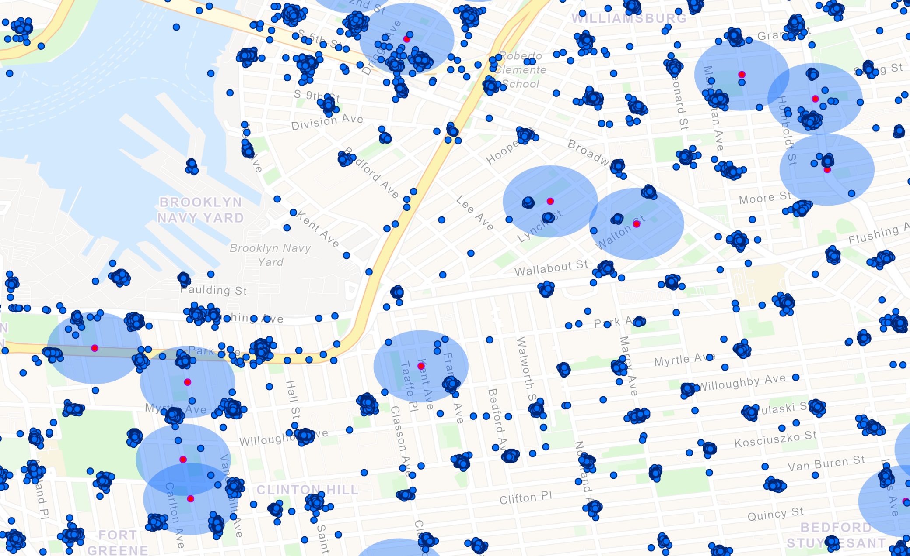

Are kids under age 16 using citi bikes?
ArcGIS
R
NYC DOE
Citi Bike Trip Data
Because they shouldn't be. The answer: signs point to yes.
Citi Bikes are great for getting around, but cycling as a mode of transportation is not trivial in New York City. A friend recently asked me if we let our 13 year old use Citi Bikes. Her kid, the same age, had been begging her since "all" his friends are allowed.
I had also seen one or two anecdotal reports online of children and teens using Citi Bikes. The company policy states that only those 16 and older are permitted to ride, which makes sense for safety and liability reasons.
I wanted to see if kids younger than 16 are actually taking out Citi Bikes in droves, as my friend's kid claims.
Middle school locations
Middle school students in New York (grades 6-8, age 11-13) have the luxury of a huge amount of independence. They fit the profile for kids who are too young for Citi Bikes but are old enough to likely have their own phones, which means they can download and use the Citi Bike app.
I downloaded the most recent (2021) middle school directory from the NYC Open Data portal which had all the variables I needed including dismissal time per school, borough, latitude, and longitude. The earliest dismissal time listed is 1:30 and the latest is 6pm. Out of 474 schools I removed 13 with no dismissal time listed and 20 with dismissal after 4pm to avoid overlapping with rush hour.
Citi Bike trip data
I downloaded all the trips from June of 2024, the month with the most trips that take place while school is in session. There were 4,783,657 rides split over five CSVs. I merged them and ran a SQL query in ArcGIS to select and remove all the weekend rides.
I separated rides on school holidays that fell on weekdays to use as a control.
Then I drew a rough polygon of the Citi Bike boundary which I used to clip out middle schools that aren't near any Citi Bike stations, and a small amount of ride points that appeared to be noise: far away from any other stations or schools, and in strange places like the Hudson River.
Approximate walking distance to nearest station

Finding all the Citi Bike stations within 200 meters of a middle school.
To estimate how far a student would need to walk to get to the closest Citi Bike Station I looked at the ride points and middle schools together. I eyeballed it and decided on a buffer of 200 meters around each school.
This left me with 342,326 rides on school days and 179,985 rides on school holidays, a 47% decrease. Most school holidays are not holidays that everyone else gets from work, so I think this says something. But i wanted to look closer at dismissal time to get more granular.
Zooming into the dismissal time for each school
Next I compared the differences between trips near dismissal time and a quieter morning time, 10-10:15 AM when kids are in school and rush hour is over.
Anecdotally, teachers and staff don't usually leave the building at the same time as students, so I looked for rides within 15 minutes of each school's dismissal time to rule out teachers and staff.
To further rule out any general Citi Bike usage patterns, I wanted to see if rides that are not near enough to any middle schools are subject to similar-sized increases between 10 AM and later in the day.
Results
There is a 55% increase in Citi bike near middle schools within 15 minutes of dismissal times.
This is compared to a 34% increase on school holiday days and 33% increase for trips that aren't near any middle schools.
This suggests that students under the age of 16 do seem to be renting Citi Bikes after school. This isn't unexpected, since all that's needed to set up an account is a phone number and email address. Payments can be made using Apple Pay in lieu of a credit card, and when I did this analysis in early 2025 there was no age verification required to use the app. Unrelated to this project, it was announced that age verification was in development for fall 2025.